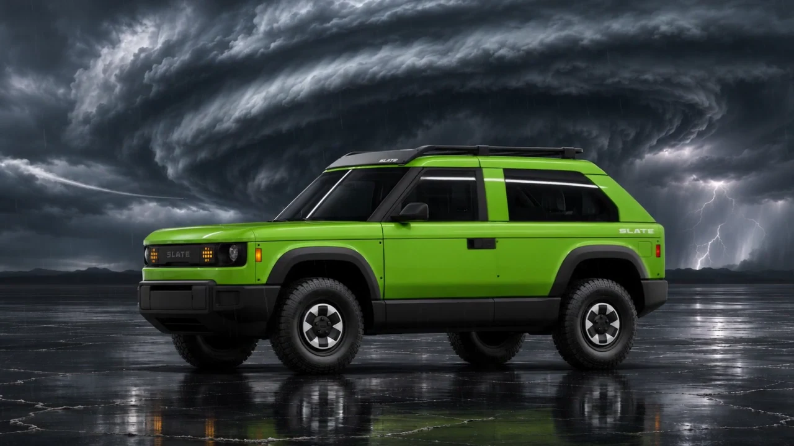
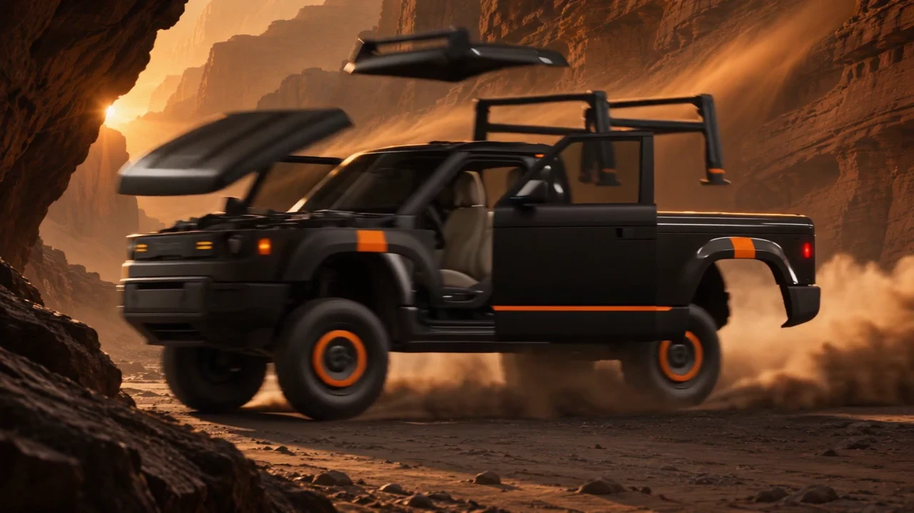
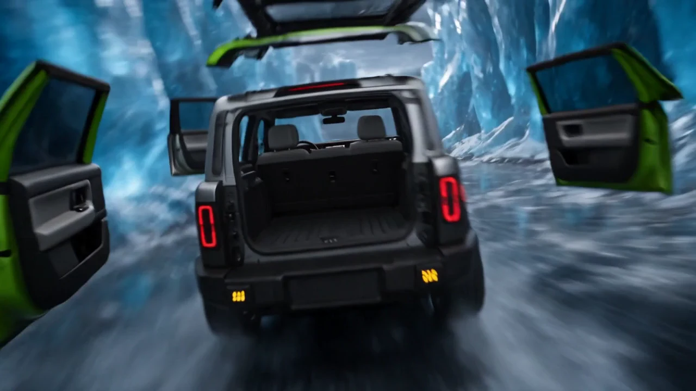
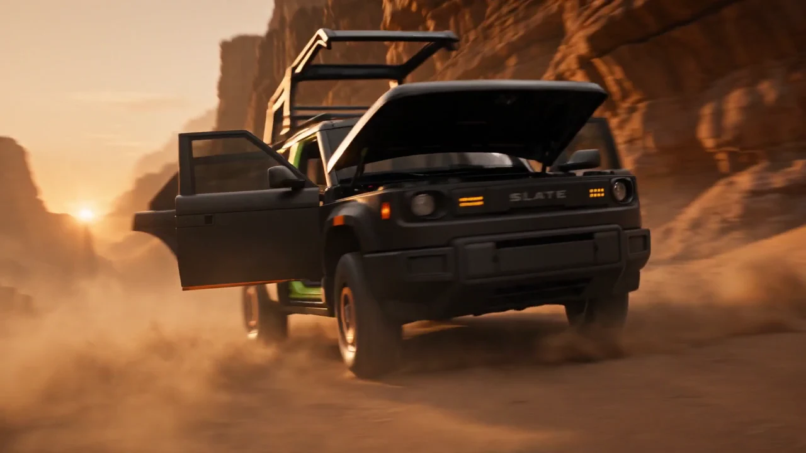
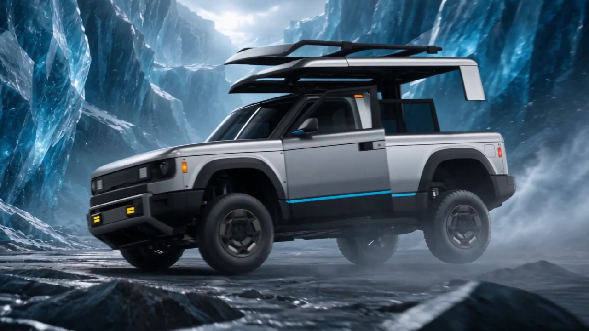

Slate / Independent product film
WORLD SHIFT
One truck, three worlds. Exterior panels change as the camera moves from glacial blue to electric green to burning orange, then back again.
- Role
- Creative direction + design
- Year
- 2026
- Created by
- Dream City Studio
A change of body. A change of atmosphere.
Quiet hero views give the truck a moment to settle. Between them, panels separate and reassemble while the camera pursues the action. Each six-second passage carries a different color, climate and configuration.
An independent AI-assisted concept, not commissioned by or affiliated with Slate Auto. The transformations are cinematic fiction.
- Glacier to storm
A silver configuration leaves the blue ice for a lime-green world under a charged sky.
- Storm to desert
Green gives way to dark bodywork and orange accents as the landscape turns to sand.
- Desert to glacier
The camera catches the truck, crosses the moving assembly and returns to the silver hero.






Build the loop around three anchors.
Public Slate product imagery anchored the visual direction. Storyboards explored shell choreography, camera passages and the contrast between impact and stillness. Three selected Seedance takes form the final 18-second cycle.
The edit keeps the native 24 fps images and generated stereo sound. Straight cuts connect the hero views; short audio fades soften the joins. Small changes in pose, surface and geometry remain part of the AI-assisted interpretation.
Creative direction + visualization + edit / Ken Bechtold